บทนี้ตอบคำถาม "ผู้รับเชื่อบิตที่ได้รับได้ไหม?" (Data Integrity) ของ Data Link Layer
เรียนว่าบิตเสียเพราะอะไร, แนวคิด redundancy และ block coding, วิธี ตรวจจับ error (Parity, 2D Parity, Checksum, CRC) และวิธี แก้ error (Hamming code, Interleaving)
บทนี้มี การคำนวณเยอะ (parity, checksum แบบ one's complement, CRC แบบหาร modulo-2, Hamming) — ต้องฝึกทำเองให้คล่อง
ต่อจาก Lecture 5.0 (framing, FCS อยู่ใน trailer) และนำไปสู่ Lecture 5.2 (ARQ = ส่งใหม่เมื่อเจอ error)
1. Recap: Data Link Layer
หน้าที่ของ data link layer: Error control, Flow control, Framing, Media access control (+ Addressing)
- รับบริการจาก physical layer และ ให้บริการแก่ network layer
- ใช้ได้ทั้งใน LANs และ WANs
2 Sublayers:
| Sublayer | ดูแลเรื่อง | ใช้กับ | ตัวอย่าง |
|---|---|---|---|
| LLC (Logical Link Control) | สถานีควบคุม การไหลของข้อมูล กับคู่สื่อสารอย่างไร | ลิงก์บน dedicated medium | PPP, HDLC, Frame-Relay (WAN) |
| MAC (Media Access Control) | หลายสถานี เข้าถึง/แชร์สื่อกลาง อย่างไร | ลิงก์บน shared medium | Ethernet, 802.11 Wireless (LAN) |
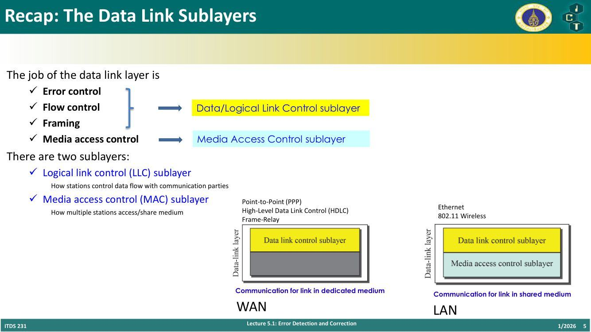
2. Bit Error ระหว่างการส่ง
สาเหตุหลัก = noise (สัญญาณรบกวน)
- Signal interference — สัญญาณรบกวนกัน
- Thermal noise — สัญญาณรบกวนจากความร้อน
- Hardware malfunction — อุปกรณ์หรือสายเสีย
- Natural phenomenon — ฟ้าผ่า ฟ้าร้อง
- Warfare — เช่น EMP (Electromagnetic Pulse) shockwave
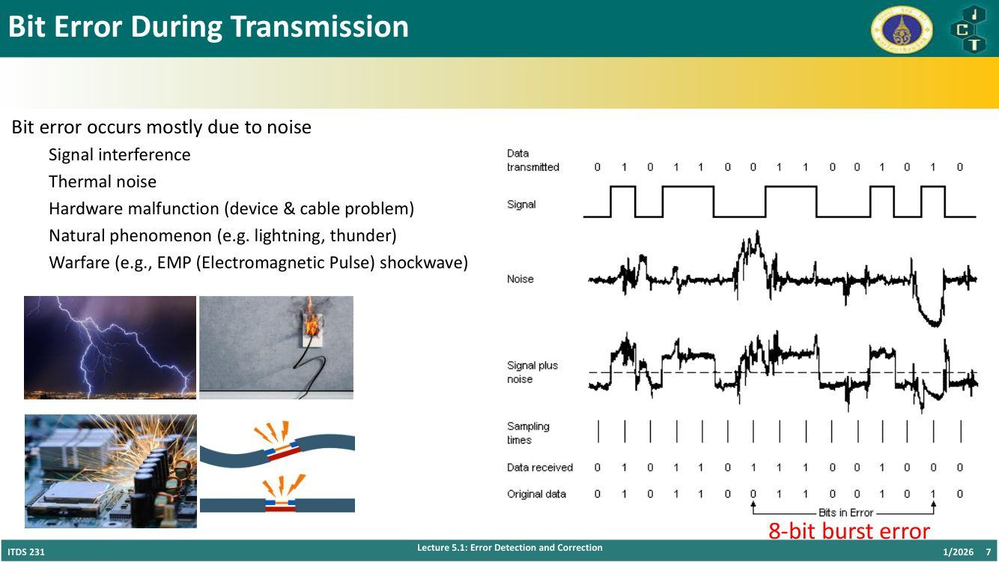
ชนิดของ error ⭐
| ชนิด | ความหมาย | ตัวอย่าง |
|---|---|---|
| Single-bit error | มีแค่ 1 บิต ที่เปลี่ยน | ส่ง 00000010 รับ 00001010 |
| Burst error | มี 2 บิตขึ้นไป ที่เปลี่ยนในช่วงหนึ่ง (ความยาว burst นับจากบิตแรกที่ผิดถึงบิตสุดท้ายที่ผิด) | เช่น 8-bit burst error |
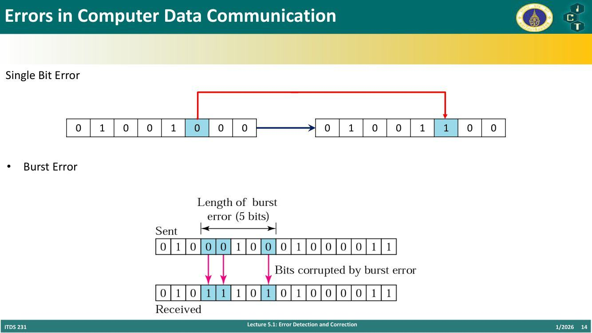
💡 burst error พบบ่อยกว่า single-bit error เพราะ noise มักกินเวลานานกว่า 1 บิต (ยิ่ง data rate สูง noise ช่วงสั้น ๆ ก็ทำบิตเสียหลายตัว)
3. Error Control
มนุษย์ควบคุม error อย่างไร
เมื่อได้ยินข้อความไม่ชัด คนจะถามกลับเพื่อยืนยัน ("XYZ?" → "YES" / "XYY?" → "NO") — มี 3 ทางเลือก:
- ไม่ทำอะไร (do nothing)
- ขอให้ส่งใหม่ (ask for retransmission)
- พยายามแก้ error เอง (try to correct)
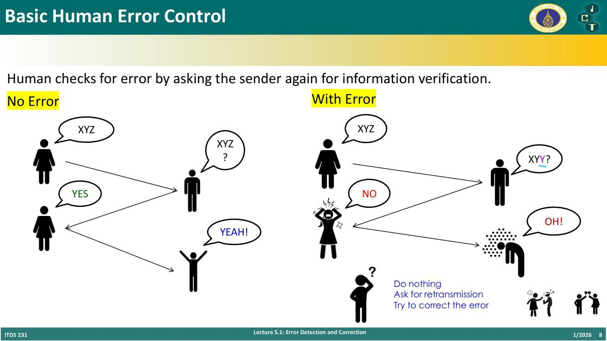
Error control ในเครือข่าย ⭐
Error control = error detection + recovery strategy มี 2 แนวทางหลัก:
| ARQ (Automatic Repeat reQuest) | FEC (Forward Error Correction) |
|---|---|
| ตรวจพบ error แล้วขอให้ส่งใหม่ | เพิ่ม redundancy มากพอ ให้ผู้รับ แก้ error บางแบบได้เอง |
| redundancy น้อย แต่ต้องมีช่องทางย้อนกลับ | redundancy มาก แต่ไม่ต้องส่งใหม่ |
| เรียนต่อใน Lecture 5.2 | Hamming code, interleaving |
EDC (Error Detection and Correction bits)
- D = ข้อมูลที่ต้องการป้องกัน (อาจรวม header fields)
- EDC = บิตสำหรับตรวจจับ/แก้ error (redundancy)
- ผู้ส่งส่ง D + EDC ผ่าน bit-error prone link → ผู้รับได้ D' + EDC' → ตรวจว่า "all bits in D' OK?" → ถ้าไม่ OK = detected error, ถ้า OK ส่ง datagram ขึ้นไป
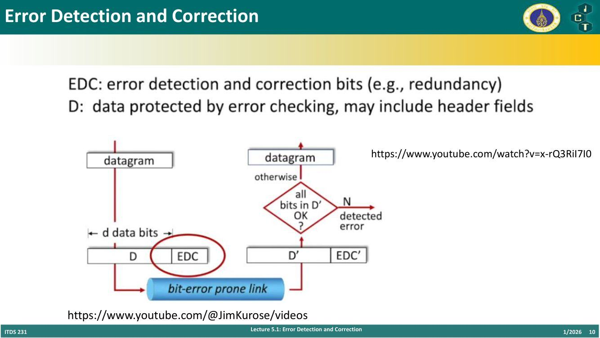
4. Redundancy และ Block Coding
Redundancy
- ในการสื่อสารข้อมูล จะมีประสิทธิภาพกว่าถ้าผู้รับ รู้เองว่าข้อมูลผิด โดยไม่ต้องถามผู้ส่งทุกครั้ง
- ผู้ส่งจึงต้องให้ "คำใบ้" (hints) ช่วยผู้รับตรวจความถูกต้อง
- Redundancy = การ เพิ่มบิตพิเศษ เพื่อตรวจ error ที่ปลายทาง บิตเหล่านี้ ถูกทิ้ง ทันทีเมื่อตรวจความถูกต้องเสร็จ
Block Coding ⭐
- redundancy ต้อง สัมพันธ์กับข้อมูล จึงจะใช้ตรวจความถูกต้องได้
- สร้าง redundancy หลังส่งข้อมูลทั้งหมดไม่สมเหตุสมผล → แบ่งข้อมูลเป็น blocks ส่งทีละ block พร้อม redundancy
| สัญลักษณ์ | ความหมาย |
|---|---|
| k | จำนวนบิตของ dataword → มีได้ 2^k แบบ |
| r | จำนวนบิตของ redundancy (r < k ไม่งั้นไม่คุ้ม) |
| n = k + r | ขนาด codeword → มีได้ 2^n แบบ |
- ⚠️ แม้มี dataword 2^k แบบ แต่ codeword ที่ใช้จริงมีน้อยกว่า 2^n เพราะไม่ได้ใช้ redundancy ทุกค่า (codeword ที่ไม่อยู่ในชุดที่ใช้ = ตรวจได้ว่าผิด)
กระบวนการ:
- Sender (Encoder): k-bit Dataword → Generator → n-bit Codeword
- ส่งผ่าน unreliable transmission
- Receiver (Decoder): n-bit Codeword → Checker → ถ้าผ่าน Extract เป็น k-bit dataword, ถ้าไม่ผ่าน Discard
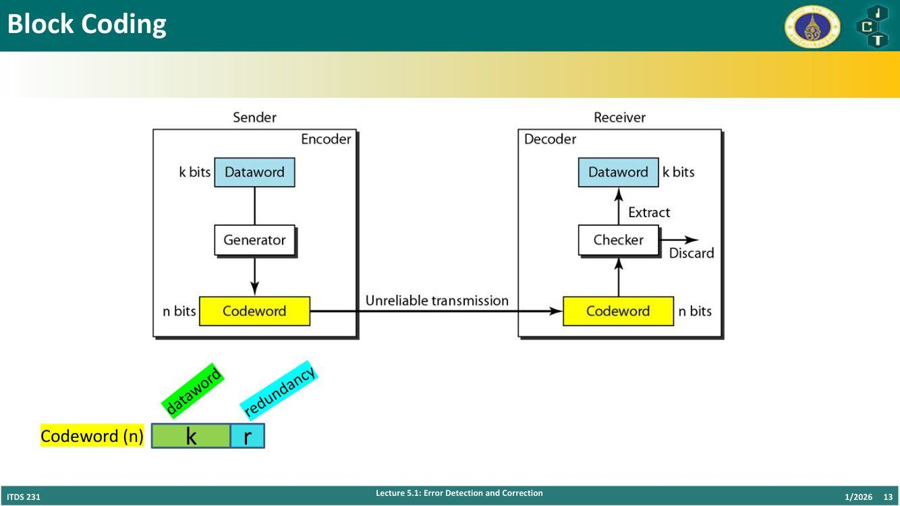
5. Error Detection: Parity Check
Error detection ง่ายกว่า error correction และเป็นขั้นแรกของกระบวนการแก้ error
Detection methods มี 3 วิธี: Parity check, Cyclic redundancy check (CRC), Checksum
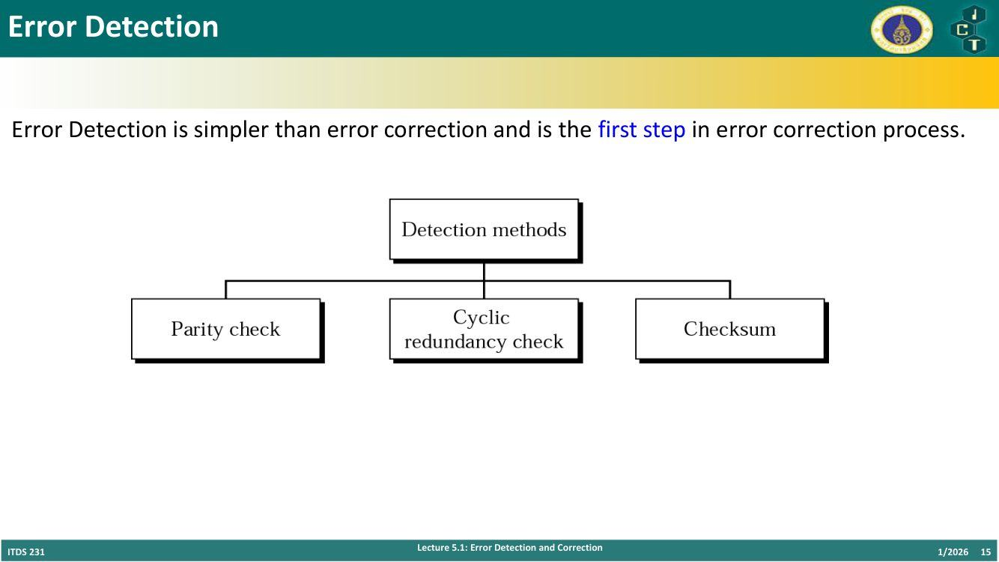
Parity Check ⭐
เพิ่ม parity bit 1 บิต ให้ทุก data unit:
| Even parity | Odd parity |
|---|---|
| เพิ่มบิตให้ จำนวน 1 ทั้งหมดใน codeword เป็นเลขคู่ | เพิ่มบิตให้ จำนวน 1 ทั้งหมดใน codeword เป็นเลขคี่ |
Even Parity Bit Checking:
- Sender: data
1100001→ คำนวณ parity bit (มี 1 สามตัว → เติม1) → ส่ง11000011 - Receiver: นับจำนวน 1 → เป็นเลขคู่? → Yes: ตัด parity bit ทิ้งและรับข้อมูล / No: reject data
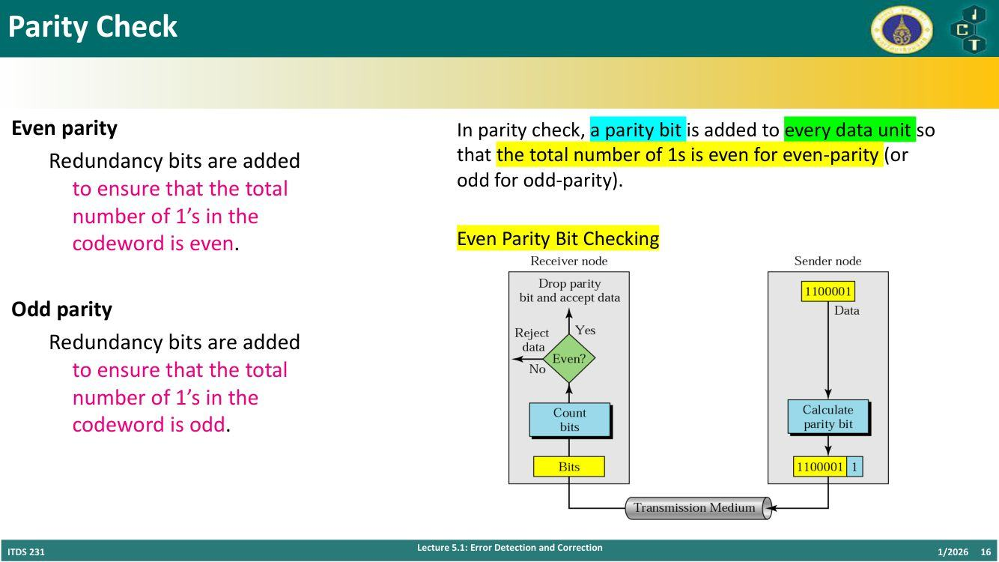
6. Syndrome ⭐
- เมื่อผู้รับทำฟังก์ชันเดียวกับผู้ส่ง ผลลัพธ์เรียกว่า syndrome
- Syndrome = ผลที่ผู้รับคำนวณจาก codeword ที่ได้รับ เพื่อตรวจว่าเกิดข้อผิดพลาดระหว่างส่งหรือไม่
- Syndrome = 0 → ถือว่า ไม่มี error; ≠ 0 → ถือว่า มี error
- สำหรับ Hamming code syndrome = ตำแหน่งของบิตที่ผิด
ตัวอย่าง (even parity, + คือ XOR / half-adder):
- รับ
010010011→ syndrome = 0⊕1⊕0⊕0⊕1⊕0⊕0⊕1⊕1 = 0 → ไม่มี error - รับ
010010111→ syndrome = 0⊕1⊕0⊕0⊕1⊕0⊕1⊕1⊕1 = 1 → มี error
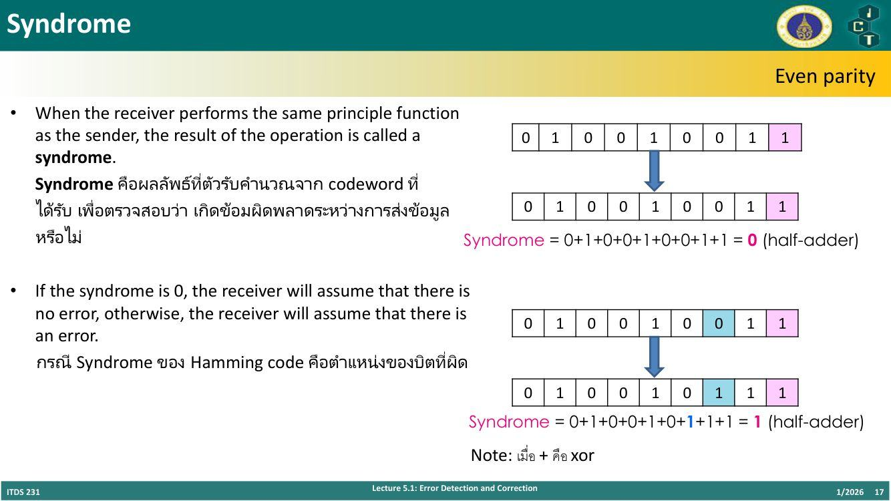
Parity Bit Generator และ Checker
- ปกติ generator กับ checker ใช้กลไกเดียวกัน (XOR ทุกบิต)
- output ของ generator = parity bit; output ของ checker = syndrome
ตัวอย่าง: ส่งคำว่า "world" ด้วย even parity
ASCII 7 บิต (EBCDIC ใช้ 8 บิต):
| ตัวอักษร | ASCII 7 บิต | ส่งจริง (+ parity) |
|---|---|---|
| w | 1110111 | 11101110 |
| o | 1101111 | 11011110 |
| r | 1110010 | 11100100 |
| l | 1101100 | 11011000 |
| d | 1100100 | 11001001 |
ถ้าเสียระหว่างทาง: รับ 11111110, 11011110, 11101100, 11011000, 11001001
→ ไบต์ที่ 1 (11111110 มี 1 เจ็ดตัว) และไบต์ที่ 3 (11101100 มี 1 ห้าตัว) เป็นเลขคี่ → syndrome = 1 → ผู้รับรู้ว่ามี error
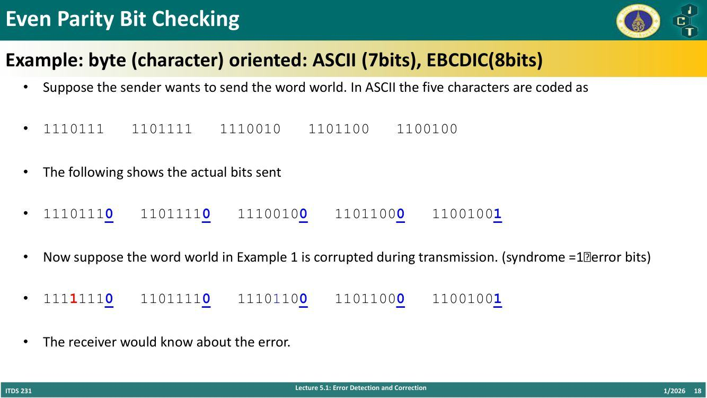
ข้อจำกัดของ Parity ⭐
- ตรวจจับ single-bit error ได้ทุกกรณี
- ตรวจ burst error ได้ เฉพาะเมื่อจำนวนบิตที่ผิดในแต่ละ data unit เป็นเลขคี่
- ⚠️ Parity ตรวจไม่ได้ถ้าจำนวน error bits เป็นเลขคู่
ตัวอย่าง: ส่ง 11011011, 10010011, 01101100 → รับ 11011011, 11011011, 01101100
→ ไบต์ที่ 2 เปลี่ยนจาก 10010011 เป็น 11011011 (ผิด 2 บิต) จำนวน 1 ยังเป็นเลขคู่ → ผู้รับตรวจไม่พบ error
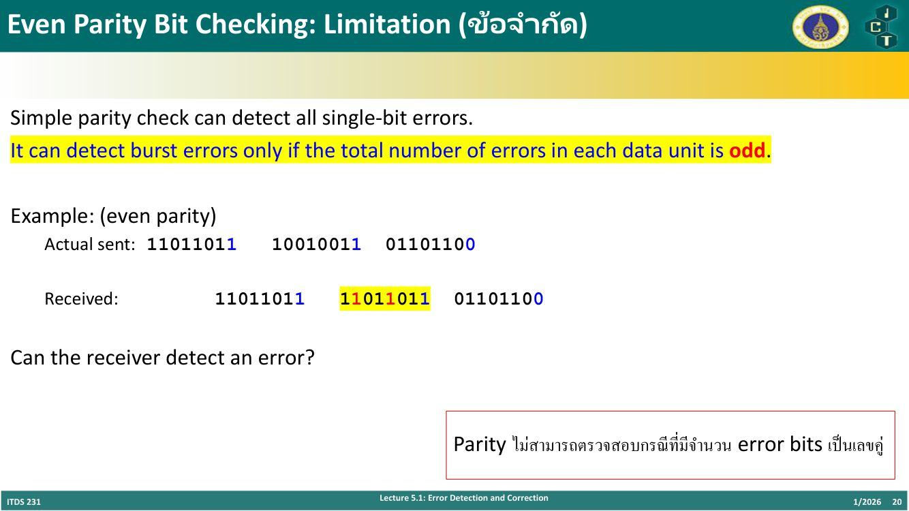
7. Two-Dimensional Parity Bit Checking ⭐
- ตรวจ parity ทั้ง แถว (row) และคอลัมน์ (column) → เพิ่มมิติการตรวจสำหรับ burst error หรือ error จำนวนคู่
- มีความสามารถแก้ error: ระบุตำแหน่งที่ผิดได้และแก้ได้
ตัวอย่าง (9,16): databit = 9 บิต (011 010 111), codeword = 16 บิต
- จัดเป็นตาราง 3×3 เติม parity ท้ายแถวและท้ายคอลัมน์ (even parity) ได้ 4×4
- ส่งแบบ First in First out
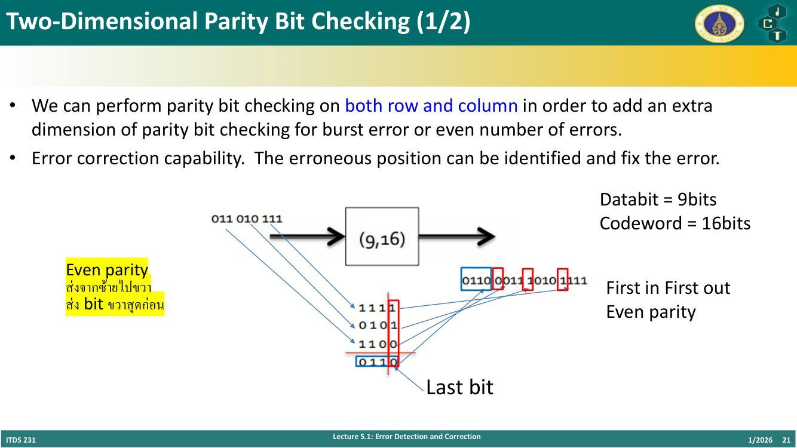
ถ้ามี error: แถวที่ parity "Not even" ตัดกับคอลัมน์ที่ parity "Not even" = ตำแหน่งบิตที่ผิด → กรณีมี 1 bit error (single error) ใช้ 2-dimensional parity เป็น error correction ได้
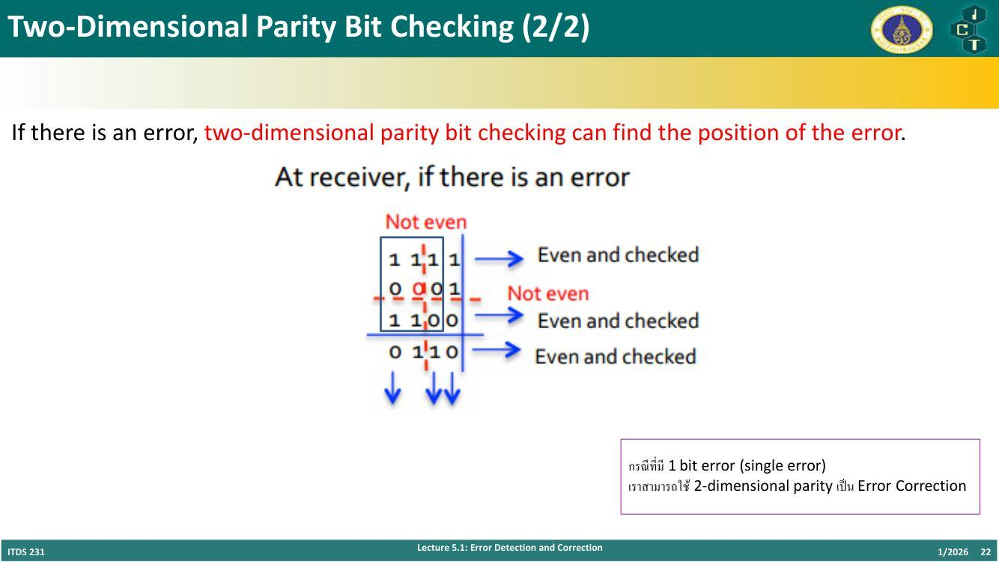
Example 1: original data 1100111 1011101 0111001 0101001 (4 แถว แถวละ 7 บิต)
| แถว | ข้อมูล | row parity |
|---|---|---|
| 1 | 1100111 | 1 |
| 2 | 1011101 | 1 |
| 3 | 0111001 | 0 |
| 4 | 0101001 | 1 |
| column parities | 0101010 | 1 |
ส่งข้อมูลแถวต่อแถวพร้อม redundancy: 11001111 10111011 01110010 01010011 01010101
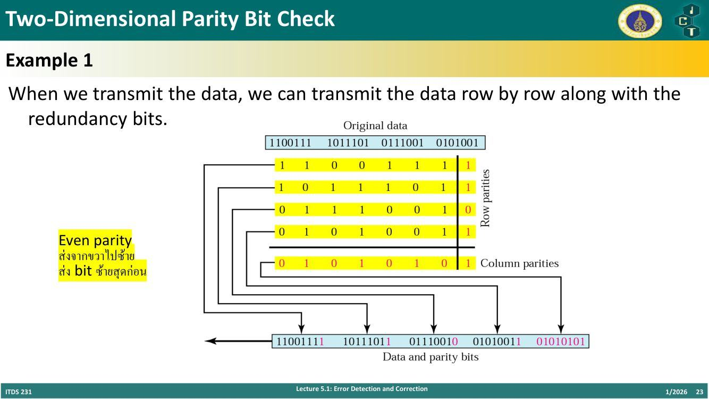
8. Checksum ⭐
- Checksum = ค่าตรวจ error ที่คำนวณจากข้อความ ความยาวเท่าไหร่ก็ได้
- ผู้ส่งคำนวณผลรวม, ผู้รับคำนวณใหม่แล้วเทียบ — Internet checksum ใช้ one's-complement arithmetic
- ตัวอย่างการใช้งาน:
- IPv4 header checksum — ป้องกัน เฉพาะ IPv4 header
- TCP/UDP checksum — ป้องกัน transport header และ data
- ⚠️ Link technologies มักใช้ CRC/FCS แทน เพราะ CRC ตรวจจับ burst error ได้ดีกว่ามาก
ขั้นตอนการทำงาน
- ต้นทาง: แบ่งข้อความเป็นหน่วยละ m บิต
- Generator สร้างหน่วย m บิตพิเศษ = checksum ส่งไปพร้อมข้อความ
- ปลายทาง: Checker สร้าง checksum ใหม่จากข้อความ + checksum ที่ได้รับ
- ถ้า checksum ใหม่เป็น 0 ทั้งหมด → รับข้อความ; ไม่งั้น → ทิ้ง (discard)
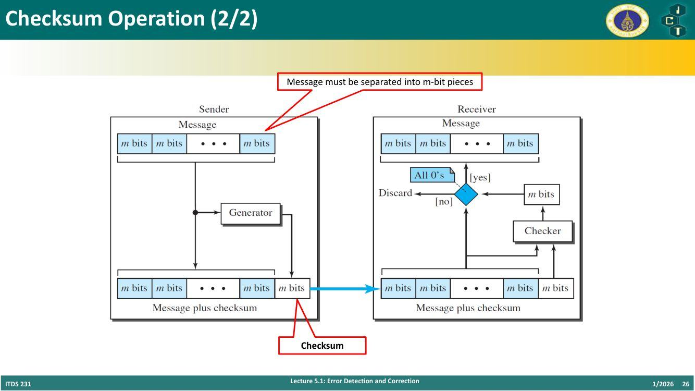
Example 1 (8 บิต) — Generator
ข้อมูล 16 บิต แบ่งเป็น 2 ชุด ชุดละ 8 บิต: 10101001 00111001
10101001
+ 00111001
----------
11100010 ← Sum (one's complement)
00011101 ← Checksum = กลับบิตของ Sum
ส่ง: 10101001 00111001 00011101
(ทบทวนการบวกเลขฐาน 2: 1+1 = 10, 10+1 = 11)
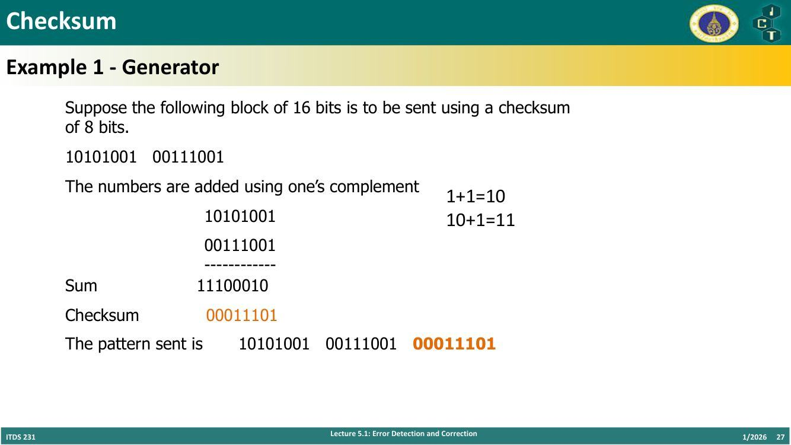
Example 1 — Checker (ไม่มี error)
10101001
+ 00111001
+ 00011101
----------
11111111 ← Sum
00000000 ← Complement = 0 ทั้งหมด → ข้อมูลถูกต้อง
Example 1 — Checker (มี error)
burst error ยาว 5 ที่กระทบ 4 บิต → รับ 10101111 11111001 00011101
10101111
+ 11111001
+ 00011101
----------
1 11000101 ← Partial sum (มีตัวทด 1 ล้นออกซ้าย)
+ 1 ← นำ carry มาบวกกลับ (wrap around)
----------
11000110 ← Sum
00111001 ← Complement ≠ 0 → ข้อมูลเสีย (syndrome ≠ 0)
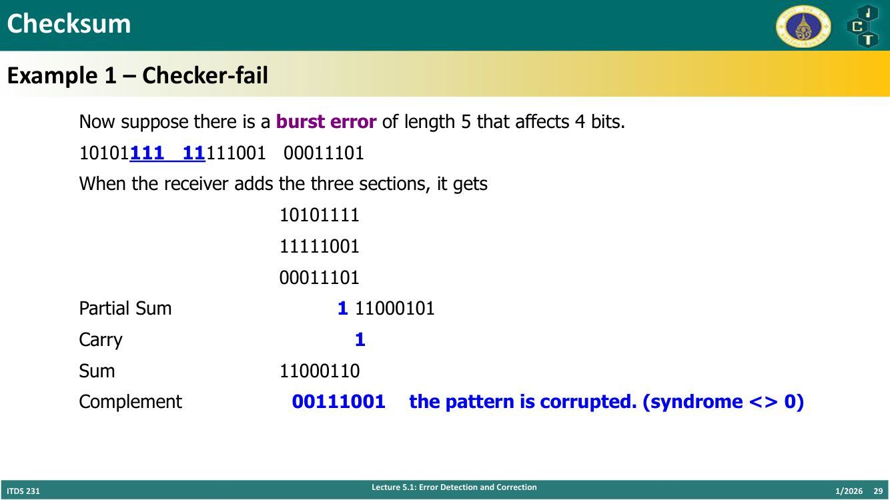
⚠️ หัวใจของ one's complement: ตัวทด (carry) ที่ล้นออกทางซ้าย ต้องนำมาบวกกลับทางขวา (wrapped addition)
Example 2 (4 บิต, ใช้เลขฐานสิบช่วยคิด) — Generator
ข้อมูล 5 คำ: 7, 11, 12, 0, 6
| ค่า | บิต | |
|---|---|---|
| 7 | 0111 | Word 1 |
| 11 | 1011 | Word 2 |
| 12 | 1100 | Word 3 |
| 0 | 0000 | Word 4 |
| 6 | 0110 | Word 5 |
| 0 | 0000 | Initial checksum @ sender |
| 36 | 0010 0100 | Sum |
- Wrapped sum: เอาส่วนเกิน 4 บิต (
0010) บวกกลับกับ 4 บิตล่าง (0100) →0110= 6 - Checksum = complement ของ wrapped sum =
1001= 9 - ส่ง packet: 7, 11, 12, 0, 6, 9
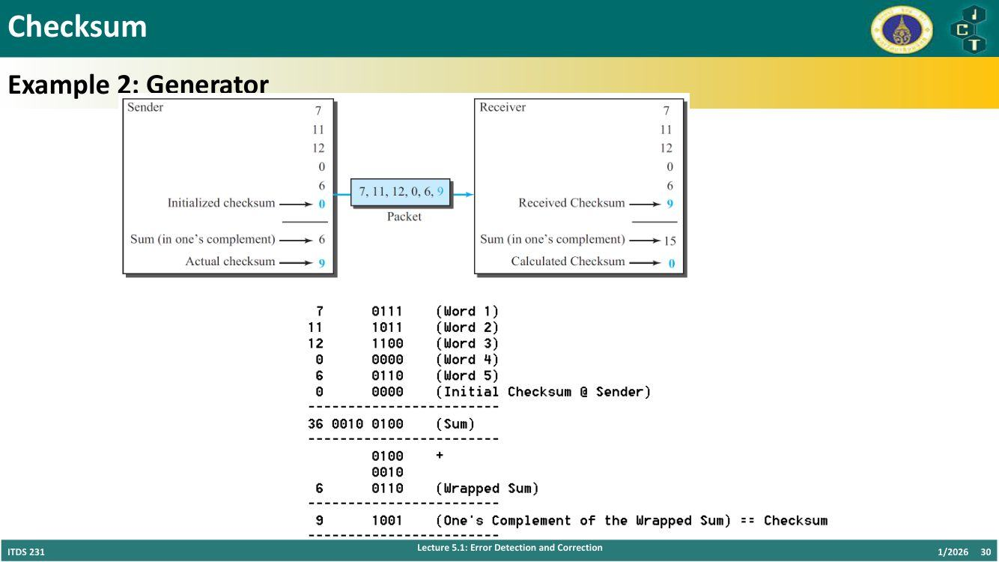
Example 2 — Checker
| ค่า | บิต | |
|---|---|---|
| 7, 11, 12, 0, 6 | 0111, 1011, 1100, 0000, 0110 | Words |
| 9 | 1001 | Received checksum |
| 0 | 0000 | Initialized checksum |
| 45 | 0010 1101 | Sum |
| 0010 + 1101 = 1111 | Wrapped (one's complement) sum = 15 | |
| 0 | 0000 | Checksum = complement ของ 1111 → 0 = ถูกต้อง |
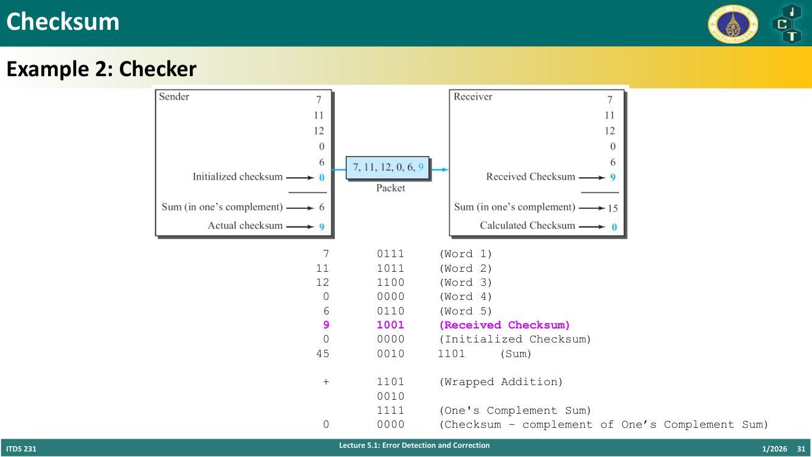
💡 เทคนิคคิดเร็วด้วยฐานสิบ (m = 4 บิต → ฐาน 2⁴ = 16): wrapped sum = (sum mod 15) โดยประมาณ; checksum = 15 − wrapped sum. ตัวอย่าง: 36 → 36 − 2×16 + 2 = 6 → checksum = 15 − 6 = 9
9. Cyclic Redundancy Check (CRC) ⭐⭐
- เทคนิคตรวจ redundancy ที่ทรงพลังที่สุด
- ต่างจาก parity ที่ใช้ การบวก — CRC ใช้ การหารฐาน 2 (binary division) ด้วย ตัวหาร (divisor / key) ที่ตกลงกันไว้ล่วงหน้า
- นำ ลำดับบิตเศษ (CRC remainder) ไปต่อท้าย data unit เพื่อให้ผลลัพธ์ หารด้วยตัวหารลงตัวพอดี
กฎของ CRC:
- CRC (redundancy bits) ต้องมี จำนวนบิตน้อยกว่าตัวหาร 1 บิต (ตัวหาร n+1 บิต → CRC n บิต)
- ต่อ CRC ท้าย dataword แล้วต้อง หารด้วยตัวหารลงตัว (นี่คือวิธีตรวจสอบ)
CRC Generator และ Checker
| Sender | Receiver |
|---|---|
| Data + 00…0 (n บิต) | Data + CRC ที่ได้รับ |
| ÷ Divisor (n+1 บิต) | ÷ Divisor เดียวกัน |
| Remainder = CRC (n บิต) | Remainder: ศูนย์ → accept, ไม่ใช่ศูนย์ → reject |
| ส่ง Data + CRC |
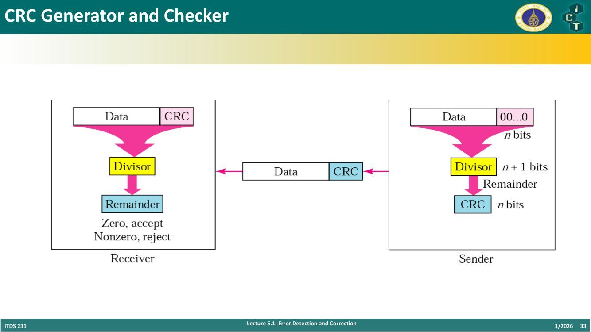
Modulo-2 division
- ใช้ XOR แทนการลบ (ไม่มีการยืม, −1 ถือเป็น 0)
- ถ้าบิตซ้ายสุดของเศษเป็น 0 → ต้องใช้
0000เป็นตัวหารแทนตัวหารจริง (ผลหารบิตนั้น = 0)
ตัวอย่าง Generator (Encoder) — ทำที่ฝั่งส่ง
- Data
100100, Divisor1101(4 บิต) → เติม 0 จำนวน 3 ตัว → ตัวตั้ง100100000 - หารแบบ modulo-2 ได้ผลหาร
111101และ Remainder =001 - Codeword =
100100+001=100100001
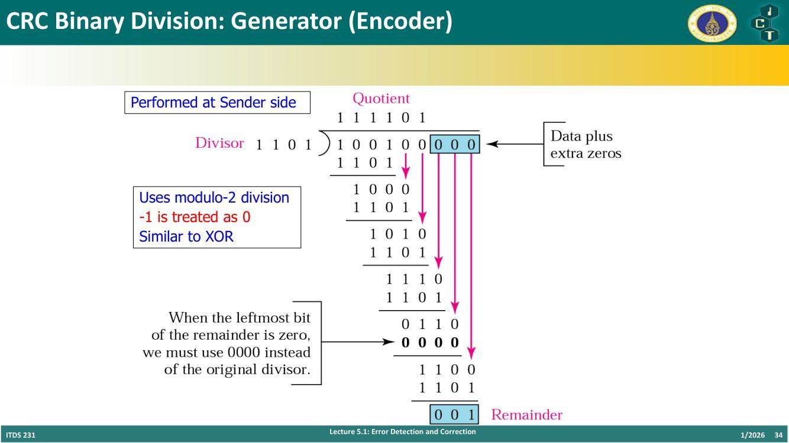
ตัวอย่าง Checker (Decoder)
- นำ codeword
100100001หารด้วย1101→ Remainder (syndrome) =000→ ไม่มี error
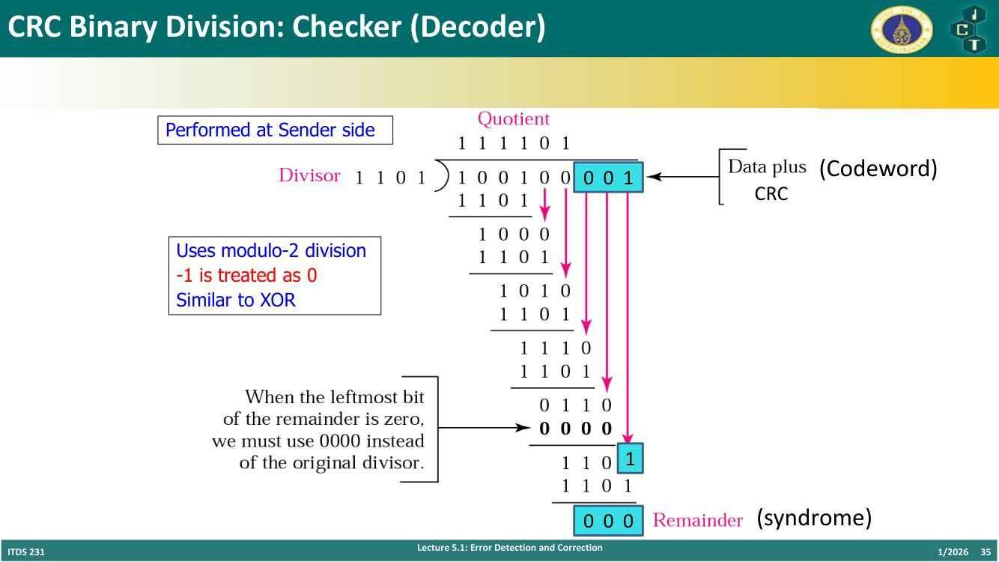
ตัวอย่าง Checker: Uncorrupted vs Corrupted (Divisor 1011)
| Uncorrupted | Corrupted | |
|---|---|---|
| Codeword ที่รับ | 1001110 |
1000110 (บิตที่ 4 เพี้ยน) |
หารด้วย 1011 |
ผลหาร 1010 |
ผลหาร 1011 |
| Syndrome | 000 (Zero) |
011 (Non-Zero) |
| ผล | Dataword 1001 accepted |
Dataword discarded |
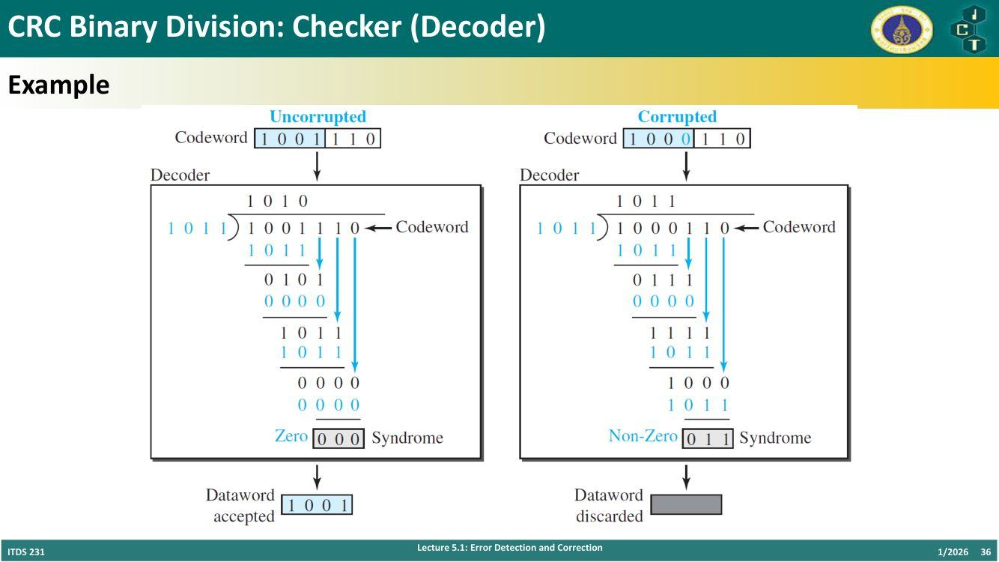
CRC(7,4) กับ Divisor 1011 ⭐
- k = 4 (dataword), n = 7 (codeword), CRC = 3 บิต
- ตัวอย่าง: ตัวตั้ง (generator) =
0010+000=0010000, ตัวหาร =1011→ Remainder = CRC =110→ codeword0010110
| Dataword | Codeword | Dataword | Codeword |
|---|---|---|---|
| 0000 | 0000000 | 1000 | 1000101 |
| 0001 | 0001011 | 1001 | 1001110 |
| 0010 | 0010110 | 1010 | 1010011 |
| 0011 | 0011101 | 1011 | 1011000 |
| 0100 | 0100111 | 1100 | 1100010 |
| 0101 | 0101100 | 1101 | 1101001 |
| 0110 | 0110001 | 1110 | 1110100 |
| 0111 | 0111010 | 1111 | 1111111 |
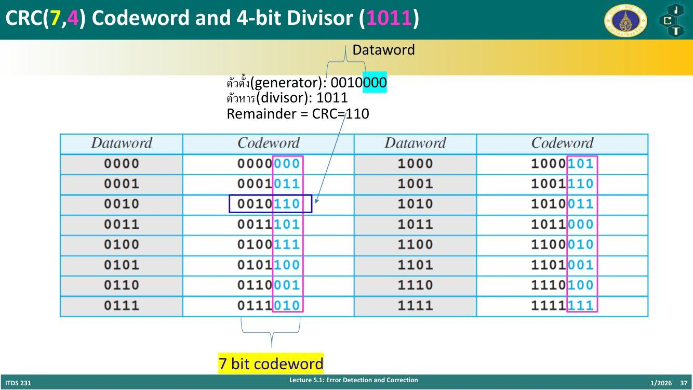
โครงสร้างฮาร์ดแวร์ CRC(7,4):
- Sender (Encoder): dataword a3 a2 a1 a0 +
000→ Generator (ใช้ divisor d3 d2 d1 d0) → remainder r2 r1 r0 → codeword a3 a2 a1 a0 r2 r1 r0 - Divisor ถูกใช้ร่วมกัน (shared) ทั้งสองฝั่ง
- Receiver (Decoder): codeword b3 b2 b1 b0 q2 q1 q0 → Checker → syndrome s2 s1 s0 → Decision logic → accept (ส่ง dataword ขึ้นไป) หรือ discard
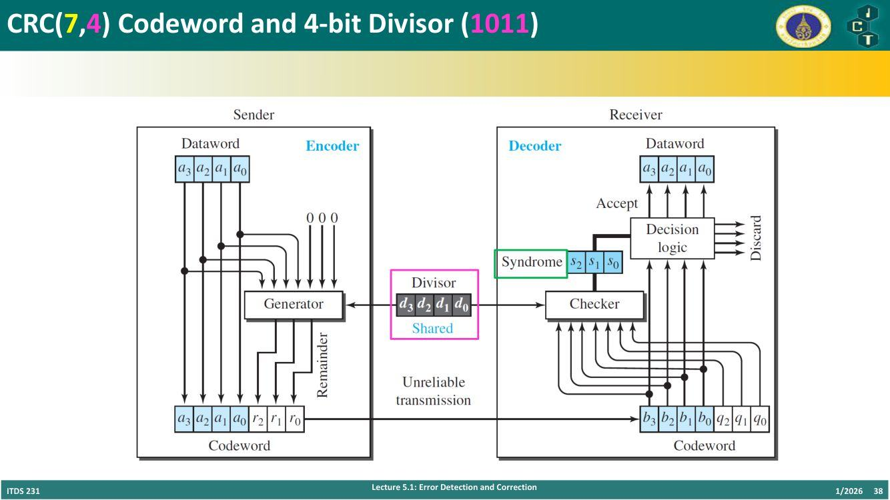
💡 สูตรลัดทำโจทย์ CRC:
- ตัวหารมี n+1 บิต → เติม 0 ท้าย dataword n ตัว
- หารแบบ XOR ทีละขั้น: ถ้าบิตซ้ายสุดเป็น 1 ใช้ตัวหาร, ถ้าเป็น 0 ใช้ 0000
- เศษ n บิตสุดท้าย = CRC → แทนที่ 0 ที่เติมไว้ ด้วย CRC
- ตรวจ: หาร codeword ด้วยตัวหารเดิม เศษต้องเป็น 0
10. Error Correction: Hamming Code ⭐⭐
Error correction ทั่วไป
- ปกติเมื่อพบ error ผู้รับต้อง ขอให้ส่งใหม่ (เฉพาะ reliable transmission mode)
- แต่บางกรณี ผู้รับ แก้ error เองได้ จาก redundancy ที่ผู้ส่งส่งมา
- วิธีที่นิยม: Hamming code, Interleaving
Hamming Code
- แก้ single-bit error ได้ โดย ระบุตำแหน่งของบิตที่ผิด
- ใช้ simple parity check วาง redundant bits ที่ตำแหน่ง 2^k ของ codeword (ตำแหน่ง 1, 2, 4, 8, …)
- แต่ละ redundant bit ตรวจบิตที่ตำแหน่งกำหนด (even parity)
ตำแหน่งใน codeword 11 บิต (dataword 7 บิต):
| ตำแหน่ง | 11 | 10 | 9 | 8 | 7 | 6 | 5 | 4 | 3 | 2 | 1 |
|---|---|---|---|---|---|---|---|---|---|---|---|
| บิต | d7 | d6 | d5 | r8 | d4 | d3 | d2 | r4 | d1 | r2 | r1 |
| Redundant bit | ตรวจตำแหน่ง | เทคนิคจำ (เลขฐาน 2 ของตำแหน่ง) |
|---|---|---|
| r1 | 1, 3, 5, 7, 9, 11, … | ตำแหน่งที่ บิตที่ 0 (หลัก 1) เป็น 1 |
| r2 | 2, 3, 6, 7, 10, 11, … | ตำแหน่งที่ บิตที่ 1 (หลัก 2) เป็น 1 |
| r4 | 4, 5, 6, 7, 12, 13, 14, 15, … | ตำแหน่งที่ บิตที่ 2 (หลัก 4) เป็น 1 |
| r8 | 8, 9, 10, 11, 12, 13, 14, 15, … | ตำแหน่งที่ บิตที่ 3 (หลัก 8) เป็น 1 |
สูตรทั่วไป (codeword เริ่มที่ตำแหน่ง 1): redundant bit ที่ตำแหน่ง k p(k) = even parity ของ {d(k : 2k−1), d(3k : 4k−1), d(5k : 6k−1), d(7k : 8k−1), …} → "เลือก k ตัว ข้าม k ตัว" เริ่มจากตำแหน่ง k
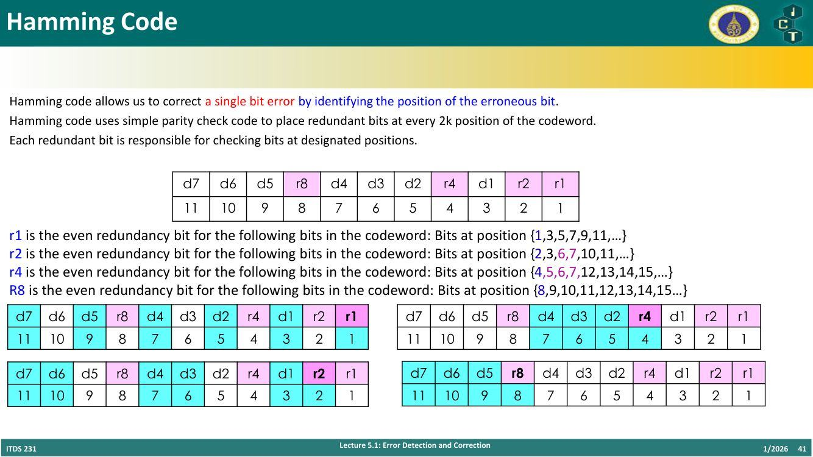
ตัวอย่าง: Dataword 1001101 ⭐
วาง data: d7=1, d6=0, d5=0, d4=1, d3=1, d2=0, d1=1
| ตำแหน่ง | 11 | 10 | 9 | 8 | 7 | 6 | 5 | 4 | 3 | 2 | 1 |
|---|---|---|---|---|---|---|---|---|---|---|---|
| d7 | d6 | d5 | r8 | d4 | d3 | d2 | r4 | d1 | r2 | r1 | |
| ค่า | 1 | 0 | 0 | ? | 1 | 1 | 0 | ? | 1 | ? | ? |
- r1 = parity ของตำแหน่ง 3, 5, 7, 9, 11 = 1, 0, 1, 0, 1 → มี 1 สามตัว (คี่) → r1 = 1
- r2 = parity ของตำแหน่ง 3, 6, 7, 10, 11 = 1, 1, 1, 0, 1 → มี 1 สี่ตัว (คู่) → r2 = 0
- r4 = parity ของตำแหน่ง 5, 6, 7 = 0, 1, 1 → มี 1 สองตัว → r4 = 0
- r8 = parity ของตำแหน่ง 9, 10, 11 = 0, 0, 1 → มี 1 หนึ่งตัว → r8 = 1
Codeword = 1 0 0 1 1 1 0 0 1 0 1 = 10011100101
| Example (1/2): r1, r2 | Example (2/2): r4, r8 |
|---|---|
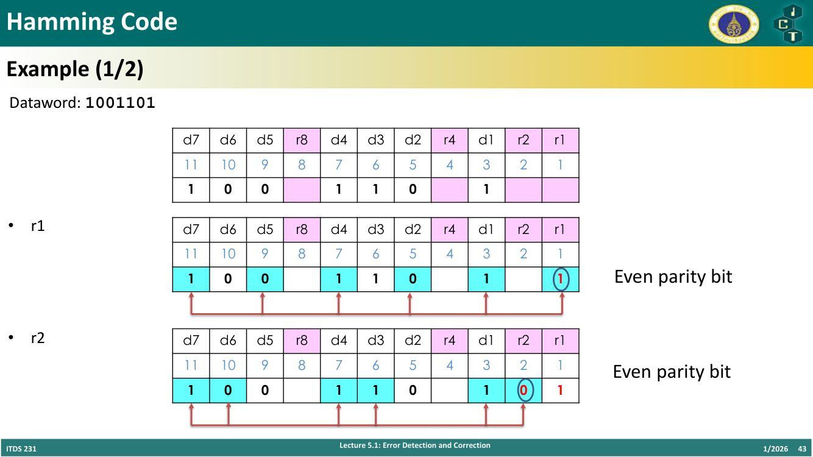 |
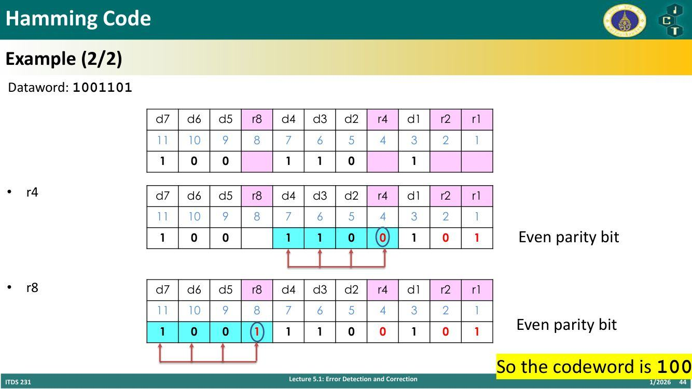 |
ตัวอย่าง: แก้ One-Bit Error ⭐
- ส่ง:
10011100101 - รับ:
10010100101(ตำแหน่ง 7 เปลี่ยนจาก 1 เป็น 0)
ตรวจแต่ละ parity (รวมตัว r เองด้วย) ถ้าเป็นคี่ = 1:
| Check | บิตที่ตรวจ | ค่า | ผล |
|---|---|---|---|
| r1 | d7, d5, d4, d2, d1, r1 | 1, 0, 0, 0, 1, 1 → สามตัว (คี่) | 1 |
| r2 | d7, d6, d4, d3, d1, r2 | 1, 0, 0, 1, 1, 0 → สามตัว (คี่) | 1 |
| r4 | d4, d3, d2, r4 | 0, 1, 0, 0 → หนึ่งตัว (คี่) | 1 |
| r8 | d7, d6, d5, r8 | 1, 0, 0, 1 → สองตัว (คู่) | 0 |
ตำแหน่งที่ผิด = (r8 r4 r2 r1)₂ = (0111)₂ = 7 → กลับบิตตำแหน่ง 7 → ได้ codeword ที่ถูกต้อง
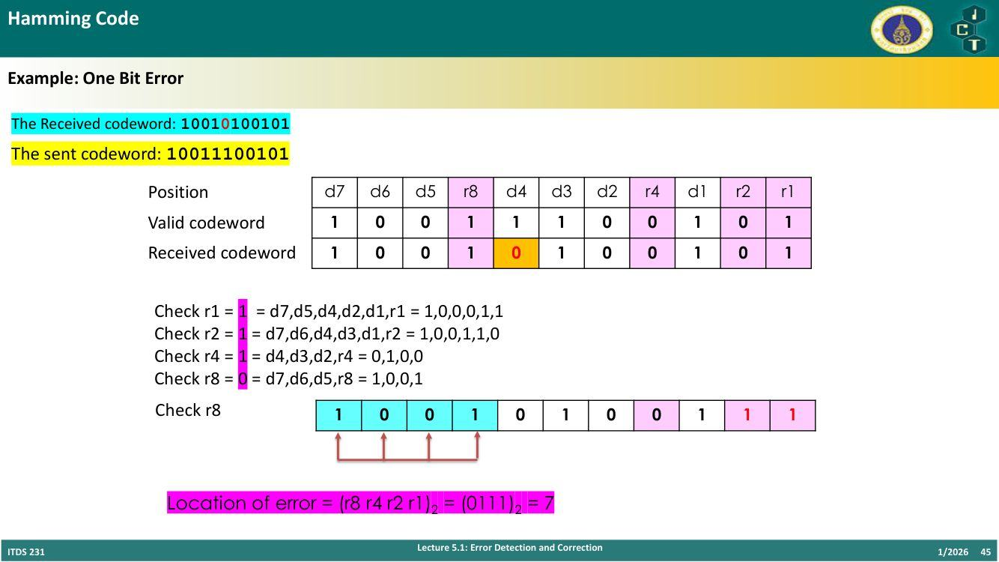
💡 อ่าน syndrome จาก r8 ลงไป r1 เป็นเลขฐาน 2 → ได้ตำแหน่งบิตผิดเลย ถ้าได้ 0000 = ไม่มี error
11. Interleaving ⭐
- ปกติเมื่อ codeword ผิด → ทิ้งทั้ง codeword
- แต่ถ้า สลับ (shuffle/interleave) ลำดับบิตก่อนส่ง การสูญเสีย codeword ทั้งก้อน (burst error) จะกลายเป็น single-bit error กระจายในหลาย codeword
- แล้ว single-bit error เหล่านั้น แก้ได้ด้วย Hamming code
ตัวอย่าง (packet 5 ชุด ชุดละ 5 หน่วย):
- a. Sender: สร้าง packet 1–5 (หน่วย 01–25) แล้ว ส่งตามคอลัมน์ (column) แทนตามแถว
- b. Packets sent:
25 20 15 10 05,24 19 14 09 04,23 18 13 08 03, … - c. Packets received: ชุดกลาง (
23 18 13 08 03) หาย (Lost) - d. Receiver: จัดเรียงกลับตามคอลัมน์ → packet 1–5 แต่ละ packet หายไปแค่ 1 หน่วย (หน่วย 03, 08, 13, 18, 23) แทนที่จะหายทั้ง packet
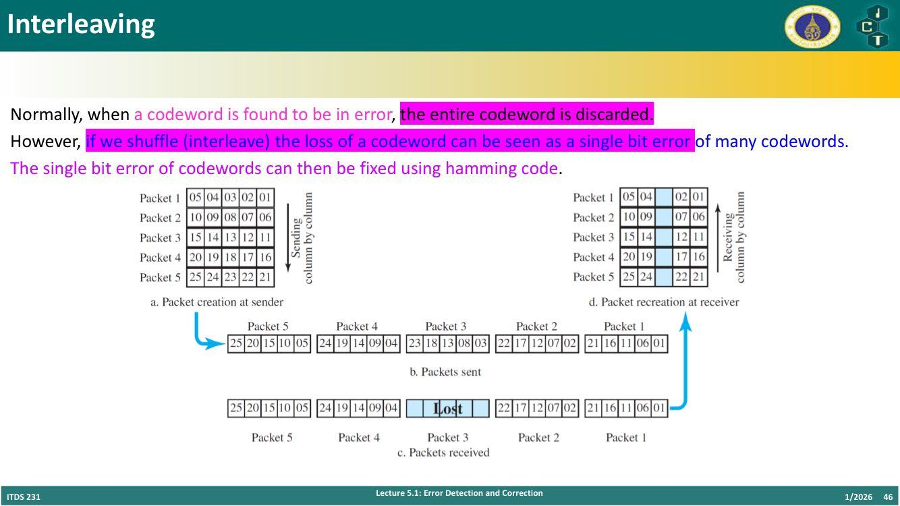
ตัวอย่าง burst error correction:
- burst error ในข้อมูลที่กำลังส่ง (data in transition) กินหลายบิตติดกันในทิศทางการส่ง
- แต่เพราะ interleave ไว้ burst แต่ละครั้งทำลายแค่ 1 บิตของแต่ละหน่วย (received data มี
?แค่ 1 ตำแหน่งต่อแถว) - แต่ละแถวจึงแก้ด้วย Hamming ได้ → ได้ข้อมูลเหมือนก่อนส่ง
The trick is to let the burst error corrupt only 1 bit of each unit
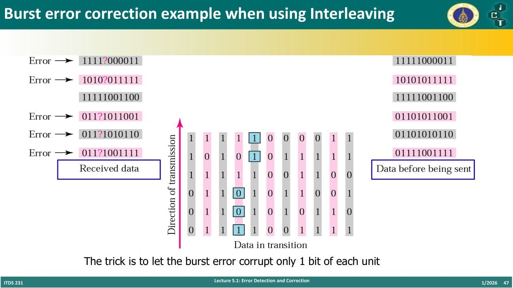
💡 เหมือนแบ่งไข่ใส่หลายตะกร้า: ถ้ารถชน (burst) ทำตะกร้าเดียวแตก ก็ยังเหลือไข่ในตะกร้าอื่น — ในที่นี้กลับกัน คือกระจาย "ความเสียหาย" ให้ทุกตะกร้าเสียนิดเดียวที่ซ่อมได้
12. ตารางเปรียบเทียบวิธี
| วิธี | หลักการ | ตรวจจับ | แก้ไขได้ | ใช้ที่ไหน |
|---|---|---|---|---|
| Parity (1D) | เพิ่ม 1 บิตให้จำนวน 1 คู่/คี่ | single-bit ทุกกรณี, burst ที่ผิดจำนวนคี่ | ❌ | ASCII serial |
| 2D Parity | parity ทั้งแถวและคอลัมน์ | burst และ error จำนวนคู่ได้ดีขึ้น | ✅ single-bit | |
| Checksum | บวกแบบ one's complement แล้วกลับบิต | ✅ | ❌ | IPv4 header, TCP/UDP |
| CRC | หาร modulo-2 ด้วย divisor | ✅ ดีที่สุด โดยเฉพาะ burst | ❌ | Link layer (FCS) เช่น Ethernet |
| Hamming code | parity ที่ตำแหน่ง 2^k | ✅ | ✅ single-bit | FEC |
| Interleaving | สลับลำดับบิตให้ burst กลายเป็น single-bit | — | ✅ burst (ร่วมกับ Hamming) |
13. คำศัพท์สำคัญ
| คำศัพท์ | ความหมาย | จำง่าย ๆ ว่า |
|---|---|---|
| Single-bit error | บิตผิด 1 บิต | |
| Burst error | บิตผิด ≥ 2 บิตในช่วงเดียว | พบบ่อยกว่า |
| Noise | สาเหตุหลักของ bit error | |
| EMP | Electromagnetic pulse | |
| Error control | detection + recovery | |
| ARQ | Automatic Repeat reQuest — ตรวจเจอแล้วขอส่งใหม่ | ขอพูดใหม่ |
| FEC | Forward Error Correction — แก้เองได้จาก redundancy | เดาคำที่ได้ยินไม่ชัด |
| EDC | Error detection and correction bits | |
| Redundancy | บิตพิเศษสำหรับตรวจ error | คำใบ้ |
| Block coding | แบ่งข้อมูลเป็น block + redundancy | |
| Dataword (k) / Codeword (n) / r | ข้อมูล / ข้อมูล + redundancy / จำนวนบิต redundancy | n = k + r |
| Encoder / Generator | สร้าง codeword ฝั่งส่ง | |
| Decoder / Checker | ตรวจ codeword ฝั่งรับ | |
| Parity bit | บิตทำให้จำนวน 1 คู่ (even) หรือคี่ (odd) | |
| Syndrome | ผลที่ผู้รับคำนวณ 0 = ไม่มี error | Hamming: ตำแหน่งบิตผิด |
| 2D parity | parity แถว + คอลัมน์ | แก้ single-bit ได้ |
| Checksum | ผลรวม one's complement ที่กลับบิต | Internet checksum |
| One's complement / Wrapped sum | บวกแล้วเอาตัวทดวนมาบวกกลับ | |
| CRC | เศษจากการหาร modulo-2 ต่อท้ายข้อมูล | FCS |
| Divisor / Generator polynomial | ตัวหารที่ตกลงกันไว้ | CRC น้อยกว่า divisor 1 บิต |
| Modulo-2 division | หารด้วย XOR | |
| Hamming code | redundant bits ที่ตำแหน่ง 1, 2, 4, 8 | แก้ single-bit |
| Interleaving | สลับบิตให้ burst กลายเป็น single-bit |
14. สรุปท้ายบท / จุดที่มักออกสอบ
- สาเหตุ bit error: noise — interference, thermal noise, hardware, ธรรมชาติ, EMP
- Single-bit vs burst error
- Error control = detection + recovery: ARQ (ส่งใหม่) vs FEC (แก้เอง)
- Block coding: k-bit dataword + r-bit redundancy = n-bit codeword; 2^k datawords, codeword ที่ใช้ < 2^n
- Detection methods 3 แบบ: parity, CRC, checksum
- Even/odd parity; syndrome = 0 ไม่มี error
- ตัวอย่าง "world" — เติม parity ให้เป็นเลขคู่; ตรวจได้ว่าไบต์ไหนผิด
- ข้อจำกัด parity: ตรวจ single-bit ได้ทุกกรณี แต่ ตรวจไม่ได้เมื่อผิดจำนวนคู่
- 2D parity: หาตำแหน่งที่ผิด (แถว × คอลัมน์) → แก้ single-bit error ได้
- Checksum: one's complement, carry วนกลับ, checksum = complement ของ sum; ผู้รับรวมทั้งหมดแล้ว complement ต้องได้ 0
- Example 1:
10101001 + 00111001 = 11100010→ checksum00011101 - Example 2: 7, 11, 12, 0, 6 → sum 36 → wrapped 6 → checksum 9
- Example 1:
- Internet checksum: IPv4 header (header อย่างเดียว), TCP/UDP (header + data); link layer ใช้ CRC เพราะดีกับ burst
- CRC: หาร modulo-2 (XOR), CRC มี น้อยกว่า divisor 1 บิต, เติม 0 ท้าย dataword ตามจำนวนบิต CRC, codeword ต้องหารลงตัว, syndrome ≠ 0 → discard
- CRC(7,4) divisor 1011: 0010 → 0010110, 1001 → 1001110 — ฝึกหารเอง
- Hamming code: redundant bits ที่ตำแหน่ง 1, 2, 4, 8; r1 ตรวจ 1,3,5,7,9,11; r2 ตรวจ 2,3,6,7,10,11; r4 ตรวจ 4–7, 12–15; r8 ตรวจ 8–15
- Hamming ตัวอย่าง: dataword
1001101→ codeword10011100101; รับ10010100101→ syndrome (r8 r4 r2 r1) =0111= ตำแหน่ง 7 - Interleaving: ส่งตามคอลัมน์ ทำให้ burst error ทำลายแค่ 1 บิตต่อหน่วย แล้วแก้ด้วย Hamming